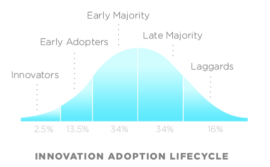
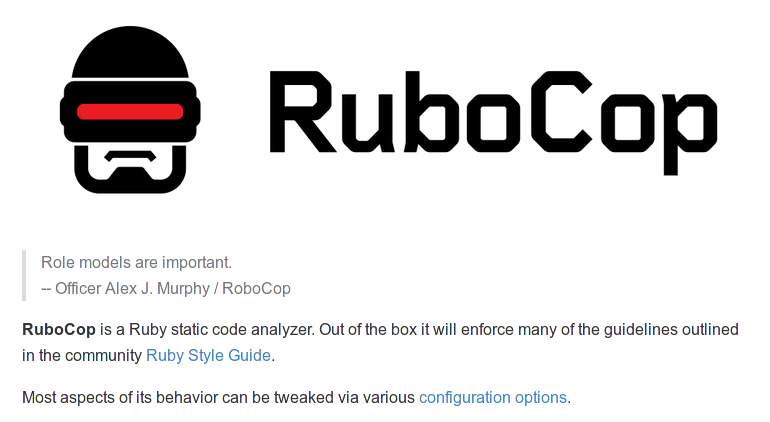
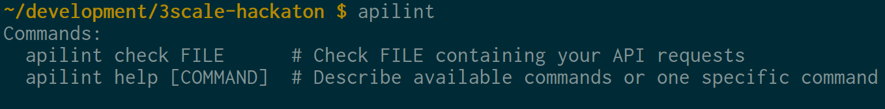

@rai & toni
present…
TENERIFE HAACKING TEAM
Innovation
{kind=link}
But this comes at a cost…
- Explosion of adoption
- Adopters from different areas
- Adopters of different knowledge
- Not Invented Here syndrome
Ruby
{kind=link}
With Apis
Convergence
- Standarization of styles.
- Follow best practices
- Recognized authorities
We're there (kinda)
- Ruby has its own style guide (powered by thoughtbot)
- SCSS has it too
- js has it too (airbnb)
- Scientific publications have it too
- APIs have it too (provided by heroku, but still settling)
And we got smarter…
So we made it automatic, so apps can check code looking for code red flags.
- Rubocop: Automatic Ruby style checking tool. 
EH!!
BUT! no checker for APIs…
Until now….
Apilint (Zapp Brannigan)
Given a collection of request-response pairs, automatically detects red flags or warns about bad practices on that API.
- Ways to collect that data:
- Apitools
- Apicast
- Swagger spec
- Ruby Rack Middleware
- rspec_api_documentation
Apilint (Zapp Brannigan)
Lints are the individual checkers for each style element.
- It's easy to create your own lints
Apilint (Zapp Brannigan)
- Which are configurable, and also activable/deactivable

Pray for the Demo Gods
- Command line interface:
- Usage: 
- Help:
Pray for the Demo Gods
- Command line interface:
- Results by Lint type:
Pray for the Demo Gods
- Command line interface:
- Results by Lint type:
Pray for the Demo Gods
- Command line interface:
- Results by Lint type:
Pray for the Demo Gods
- Command line interface:
- Total number of results:

- Total number of results:
Integrations (future work)
- 3SCALE API DOCS PROXY
- 3SCALE REQUEST LOGS
- APINATOR ?
Integrations (future work)
- imagine…
Integrations (future work)
- imagine…
THANKS
- http://kidd.github.io/apilint [WEB]
- http://github.com/kidd/apilint [GH]
- Q & A